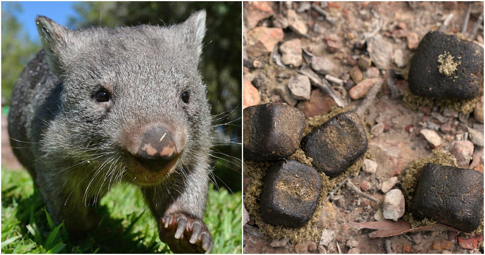

Notícias do Mundo
O parto da montanha
Uma montanha esteve em trabalho de parto
esta manhã, com grandes gemidos. A expectativa
em todo o país era muito grande. Mas no fim
ela só pariu um rato. Esta notícia é para
aqueles que prometem muito, mas não entregam nada.
Neymar aceita ser treinado por Kenzo
Depois de insistir muito, Neymar conseguiu
que Guilherme Kenzo seja seu treinador. Kenzo
justificava sua recusa alegando que Neymar
não era bom o suficiente. Depois de Neymar
oferecer a Kenzo um milhão de reais em paçocas
Amor, Kenzo não resistiu e aceitou a proposta.

Cientistas descobrem animal que defeca quadrado
Cientistas da Universidade da Austrália identificaram
um animal que faz cocô em cubos. O bicho se chama vombate
e tem o tamanho de um porco pequeno.